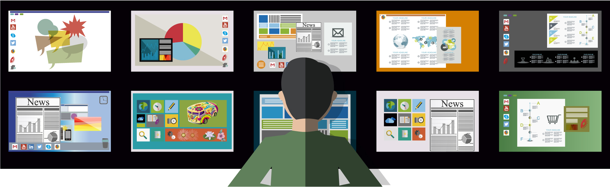

A EMPRESA
Paixão por transformar negócios com tecnologia, esse é o propósito que move a BRQ há 24 anos. Com soluções digitais próprias e customizadas, a BRQ acelera a transformação digital das maiores empresas que operam no Brasil.
DESENVOLVEDORES
O projeto do quarto termo do SENAI de Informática possibilita aos alunos desenvolverem softwares prontos para o mercado profissional e experiência em equipe. Os integrantes da equipe responsável pelo projeto da BRQ trabalharam em conjunto para concluir o seu aplicativo durante 4 meses, cada um com uma especificação no desenvolvimento da aplicação.
O PROJETO
O objetivo da plataforma WEB é um sistema de retrospectiva baseado na metodologia SCRUM. No sistema haverá três tipos de permissões: administrador, líder e usuário.
O administrador efetua o cadastro de projetos e determina quem serão os líderes de cada projeto, podendo ter assim um bom controle do sistema. A função do líder no sistema é cadastrar novas Sprints e selecionar o time e setor dos usuários. Já o usuário consegue votar e comentar as tarefas de cada Sprint comentando as positivas e negativas.
O objetivo da plataforma MOBILE é estar integrado ao sistema WEB, porém é necessário estar cadastrado para logar no aplicativo e poder utilizá-lo.


FASES DE PRODUÇÃO
Quando um projeto é desenvolvido é necessário a realização de várias etapas, para uma melhor organização e para uma boa conclusão futura. Para se concluir um projeto com êxito, deve se trabalhar visando a eficiência e excelência para dessa maneira se obter o resultado mais próximo do desejado. Seguir o que for planejado servirá como um guia para passar por cada fase que serão detalhadas a seguir visando a obtenção do sucesso.
Iniciação
Essa fase do projeto é primordial nela conseguimos ter uma visão ampliada do projeto todo. Ela é bastante destacada pela formação das equipes, e é necessário compreender o que foi solicitado e efetuar o esclarecimento de todas as dúvidas.
Planejamento
O planejamento do projeto é feito para melhorar a organização, nesse processo é apresentado um cronograma com datas, prazos e a função que cada membro irá executar, ele deve ser atualizado para as informações serem designadas e o projeto ser desenvolvido e entregue dentro do prazo.
Execução
A etapa de execução tem extrema importância, nela acontece tudo o que já foi planejado, discutido e esclarecido é onde tudo o que já foi feito é posto em pratica, assim acontece o desenvolvimento do que foi solicitado no escopo seguindo todos os requisitos apresentados. É necessário também cumprir as datas, prazos e efetuar a atualização do progresso de desenvolvimento.
Monitoramento e Controle
O Monitoramento e Controle são essenciais, pois através deles podemos obter o relatório de andamento do projeto, monitorando assim se tudo está acontecendo como o planejado, se o escopo está sendo atendido e se todos os requisitos solicitados estão também sendo atendidos. Assim com o monitoramento e controle em ordem podemos prosseguir para a finalização do projeto.
Finalização
Chegando ao final do projeto após decorrer por todas as fases do projeto é necessário finalizar a documentação, ajustar tudo o que for necessário para a entrega e realizar a apresentação.